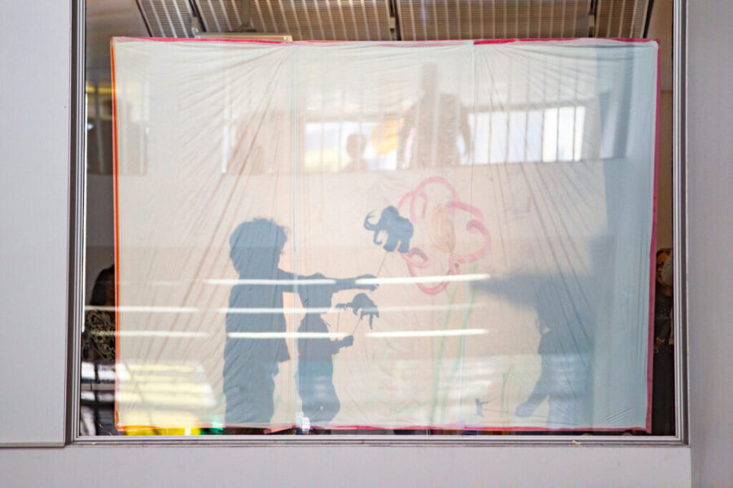

Family Day | Myths and Legends
Folklore, fantasy, and fortune! Take inspiration from Firelei Báez and Yoko Ono to venture forth into a mythical land.
Designed for children under 12 and their grown-ups, MCA Family Days invite our youngest visitors to be the museum’s artists, thinkers, and collaborators.
Access Information
ASL interpretation is provided at this event. To request additional accessibility services, please contact us at Accessibility@mcachicago.org or 312-397-4076.
About the Artists
Delisha McKinney (b. 1986, Chicago) is a self-taught multidisciplinary artist working in painting, soft sculpture, cut-paper illustration, and murals. Shaped by a childhood of sheltered exploration and a passion for tactile storytelling, her work blends bold colors, symbolic imagery, and layered narratives to evoke a sense of curiosity and emotional depth. Growing up in a military household, McKinney developed an early love for creative expression, exploring various artistic mediums such as fiber arts, ceramics, photography, and relief sculpture. Her practice is influenced by music, which shapes the mood and emotional tone of her pieces, allowing her work to feel both deeply personal and universally resonant. McKinney’s paintings and mixed-media pieces often explore themes of childhood, nostalgia, resilience, and the unseen forces that shape our experiences. With an eye toward film production, she aspires to bring her stories to life on an even larger scale, crafting immersive visual narratives that engage and inspire. Through continuous exploration and innovation, McKinney invites audiences to step into her imaginative world . . . one that bridges the past, present, and future through color, texture, and storytelling.
Ana De Orbegoso (Peru/USA) is an interdisciplinary artist who lives and works between New York and Lima. Her practice is largely informed by Peruvian cultural and aesthetic values, developing works exploring gender and identity aspects, redefining historical symbols from the collective memory. Her works in photography, video, ceramics, textile art, projections, installations, multimedia productions, workshops, social media campaigns, and artistic actions, which invite the public’s participation, have been exhibited in museums and galleries in the Americas and Europe. This includes: The Last Inca Princess at archaeological Pachacamac Sanctuary, Lima; Urban Virgins in Arte Donde Vallas 20 public panels around Lima; Peruvian Embassy, Washington DC, and Peruvian Consulate NY; National Hispanic Cultural Center, Albuquerque, NM; Photography Month, Sao Paulo, Brazil; NY LatinAmerican Triennial; and March Foundation Madrid, among others. A NYFA and NALAC Fellow, De Orbegoso has won an EnFoco New Works Award and 1st place in the First National Photography Contest ICPNA Peru. The Last Inca Princess won Best Experimental Short Big Apple Film Festival NY and California Women’s Film Festival. Urban Virgins, a decolonization photographic series, toured Peru’s towns and villages +35. Her work is featured in the permanent collection of the Art Institute of Chicago, the Museum of Modern Art Rio, and the National Museum of Women in the Arts, DC.
Ana is presented at Family Day in collaboration with: